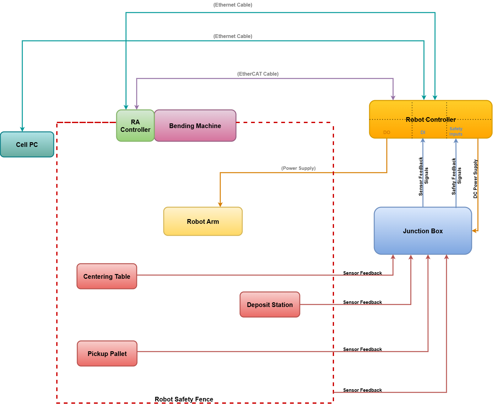

Architecture
The below image displays the overall system architecture of the FluxRobot Cell. It provides a visual representation of how different components interact with each other within the robotic system.
For a description of the physical components, see FluxRobot Cell.

Hardware Communication
At runtime, two controllers coordinate to execute each bend:
| Interface | How It Works |
|---|---|
Robot Controller ↔ Right-Angle (RA) Controller |
The RA Controller (Smart Core Press brake controller) sends synchronization signals to the Robot Controller to coordinate the timing between machine movement (ram) and robot movement during each bend cycle. |
Junction Box (optional) |
Routes I/O signals between the Robot Controller, RA Controller, and peripheral devices such as grippers, back gauges, and safety interlocks. |
Software
Programs are prepared offline and then uploaded to the robot for production.
| Component | Stage | Role |
|---|---|---|
FluxRobot CAM |
Offline |
It is an offline programming software. Users define the bend sequence and robot motion. Flux generates a .rbc file containing all motion data and ram points. |
Post-Processor |
Offline |
It is a Windows executable that converts the .rbc file into a set of .LS robot program files ready to upload to the robot controller. It runs in the background during .rbc file generation |
Right-Angle Control |
At the machine |
It is a Human Machine Interface software. Manages the bending machine operations and coordinates timing with the robot controller. |
Offline Programming Flow
-
FluxRobot CAM → .rbc file → Post-Processor → .LS files → Robot Controller
-
FluxRobot CAM → .fx file → RA Controller